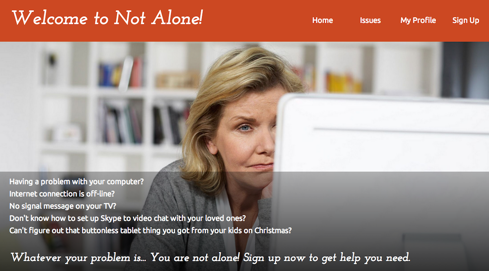
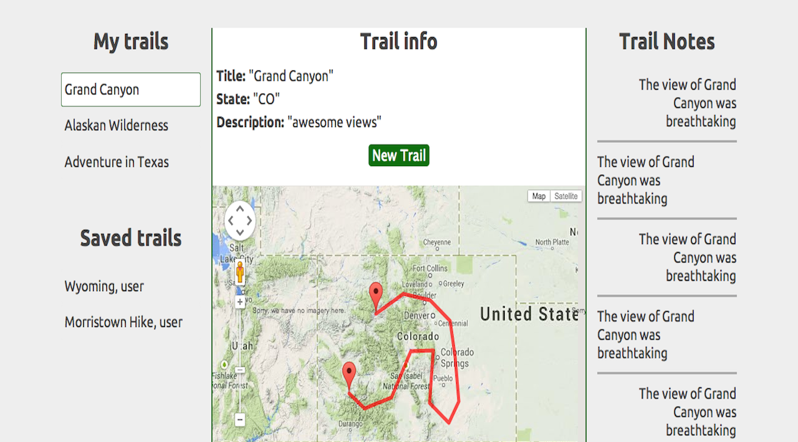

A Web Development Immersive student at General Assembly

Not Alone web app aims to narrow gap between older and yonger generations. Technology is vital part of our lives. It is everywhere we go and in almost everything we do. Yet even in this day and age there are still people who find themselves challenged by it. Not Alone strives to change that by bringing people who struggle and those who are willing to help together. Users connect to each other to raise and/or solve new and existing issues by sending text messages through the web app.
This project was my first attempt to build a fully functional feature rich web app using Ruby on Rails, PostgreSQL database and third party API (for text messaging functionality I chose Twilio API).

Tired of the same old hiking trail? Trail Map allows users to effortlessly connect with each other to discover and share trails submitted by other hikers, just like you! Whenever your adventure takes you Trail Maps will be a perfect companion for all your outdoor activities. With Trail Map you can create and share trails, view and favorite other users' trails, share your experience and discuss your adventures with other users by adding notes to trails.
Trail Map was created as a team project in collaboration with John Murphy and Tim Hanes. It was built on Ruby on Rails and Javascript. Because of the nature of the app we went with Google Maps API which turned out to be challenging at times but very powerful